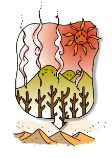

Usar menos gas para cuidar el planeta
En los hogares se consume gas principalmente para calefacción, provisión de agua caliente y cocción de alimentos. La forma en que tenemos acceso al gas en nuestros hogares es a través de redes de distribución (gas natural) o través de garrafas (gas licuado envasado).
Además hay que tener en cuenta que el 60% de la electricidad producida en el país se genera con gas natural, así que cada vez que se utiliza electricidad se está consumiendo gas.
El gas es una fuente de energía no renovable, al igual que el petróleo, el carbón y la energía nuclear. Como todas las fuentes de energía no renovables, las reservas de gas algún día se agotarán.
La combustión del gas tiene un impacto negativo en el planeta Tierra, ya que contamina la atmósfera y emite gases de efecto invernadero que aceleran el cambio climático. Es por eso que es muy importante que hagamos un uso eficiente y racional del gas.
Las fuentes de energía renovables, como la solar y la eólica, tienen un impacto ambiental menor. A lo largo de este siglo la humanidad tendrá que ir aumentando su uso, a medida que disminuyen las reservas de las fuentes de energía no renovables.
Actualmente, para sustituir el uso del gas, se están empleando calefones, hornos y cocinas solares, aerogeneradores y se están calefaccionando los hogares con métodos solares pasivos.

La manera más eficaz de reducir los efectos negativos provenientes de la utilización del gas sobre el ambiente es racionalizar su uso incorporando nuevos hábitos.
Por ejemplo, podemos abrigarnos en invierno para evitar calefaccionar de más el hogar, tapar la olla al cocinar, etc.
Expertos en energía opinan que actualmente estamos viviendo en «coladores de energía», es decir, que nuestros hogares pierden calor en invierno y frío en verano.
Para utilizar la energía de manera eficiente se debe planificar el diseño de las construcciones teniendo en cuenta criterios de eficiencia energética, por ejemplo orientando las ventanas al norte para aprovechar el calor del sol en el invierno, y construyendo aleros para que el sol no entre directamente en verano.
Otra medida, es colocar burletes en las puertas y ventanas para evitar que la calefacción se escape por las ranuras, logrando así aprovechar mejor el gas, reducir los costos económicos de acceder al mismo y minimizar su efecto nocivo sobre el ambiente.